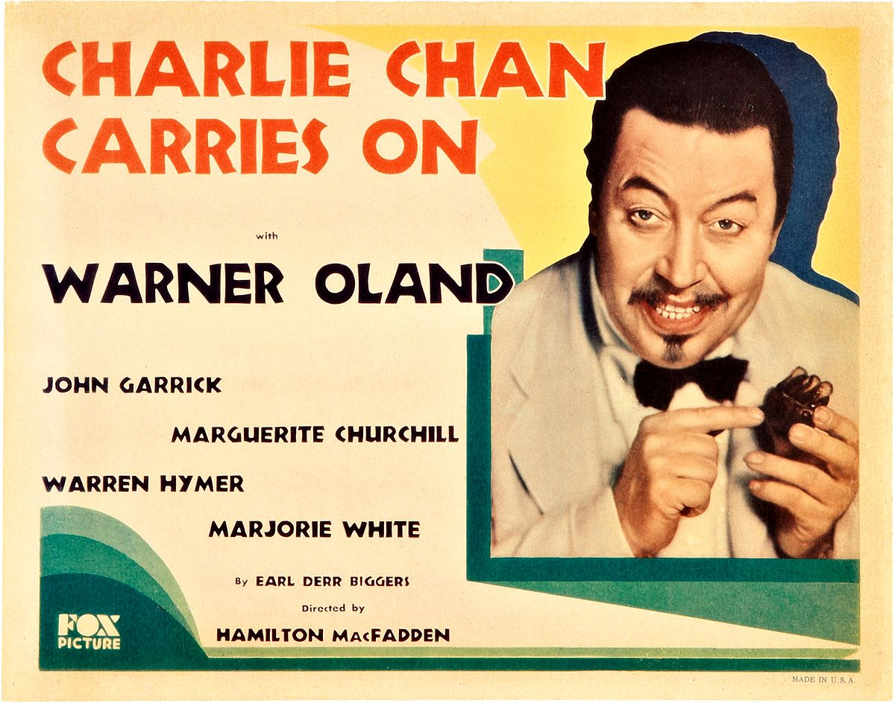
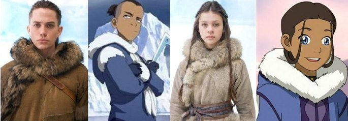

In the early 20th century, white actors caricatured different races by wearing blackface or yellowface, commonly exaggerating the perceived stereotypes of other races. For example, white actor Warner Oland played the Chinese detective Charlie Chan in Charlie Chan Carries On (1931) and subsequent films. Because of the lack of characters of color in the film industry, these roles were well received at the time by minorities. Films became more racially integrated by the mid-20th century, and blackface mostly disappeared from the film industry. The film Othello (1965) was an exception, as the white actor Laurence Olivier was cast as "the Moor." He wore blackface as the title character.
The practice of "yellowface" extended into the 1960s. For instance, Mickey Rooney played a Japanese landlord in Breakfast at Tiffany's (1961). Professor David A. Schlossman said of Asian characters in particular, "Many of the Asian roles portrayed by White actors also contributed to the pantheon of racial stereotypes in US national discourse." At the start of the 21st century, minorities were still under-represented in the film industry at different stages. While historically black roles are now generally cast with black actors, the practice of whitewashing applied to other minorities.
The BBC said in 2015, "The practice of casting white actors in non-white roles is still prevalent in Hollywood – despite widespread condemnation and protest." A report in 2013 showed that 94% of film executives were white and that non-white people were under-represented as filmmakers and actors. The BBC explored two reasons for the casting practice: institutional racism and producers believing that well-known white actors attract more audiences and maximize profits. Thomas Rothman, the chairman of Sony Pictures said, "I guess there's a certain institutional force and memory that exists out there... I think the industry's improving but I certainly agree with those who say we haven't come far enough fast enough."
Jeffery Mio, author of Multicultural Psychology: Understanding Our Diverse Communities, hypothesizes that the film industry, mostly white, hires people of similar backgrounds. Mio said of the rationale that only the most qualified actors are cast, "That’s the argument that directors and casting directors make, but a lot of times ethnic actors will tell us that when they say we're just choosing the best actor, they mean we're choosing our friends, or people we're used to." Craig Detweiler, professor of film history at Pepperdine University, said, "There are a shortage of African American, Asian and Latino stars. For all Hollywood's progressive politics, its casting decisions look remarkably retrograde." In 2010, TheWrap ascribed the lack of racial diversity to institutional racism and a lack of bankable actors of color and that whitewashing in films like Prince of Persia: The Sands of Time and The Last Airbender aggravated the issue.
On casting white actors to maximize profits, David White, National Executive Director of the actors' union SAG-AFTRA said popular black actors such as Will Smith, Denzel Washington, and David Oyelowo refuted the casting rationale. Assistant professor of telecommunications Andrew J. Weaver said, "There is an assumption in Hollywood that whites would avoid movies with majority black casts, or any race cast for that matter. You see this whitewashing of films – even films that have minority characters written into them are being cast with whites." Film professor Mitchell W. Block said studios adhered to casting norms as a matter of practicing business to appeal to investors and producers. Director Ridley Scott said without the casting of big-name actors, his 2014 biblical epic film Exodus: Gods and Kings would never have been made, saying, "I can't mount a film of this budget... and say that my lead actor is Mohammad so-and-so from such-and-such... I'm just not going to get financed.” USA Today noted with films like Breakfast at Tiffany's (1961), A Mighty Heart (2007), and Pan (2015), "White actors continue to be top of mind for plum roles, despite the under-representation of people of color at the acting, directing and producing levels."
Media watchdog groups have sought more authentic representations on screen, taking issue with casting decisions such as actor Johnny Depp as a Native American in The Lone Ranger (2013). With films from the United States showing in more global markets, the groups argue for roles that represent the diversity of audiences, who are seeking more authenticity. SAG-AFTRA's David White demurred on groups' opposition to casting white actors in non-white roles, "The laws insist that one’s race not be part of the qualifications for a job," but he recognized that there was a lack of diversity in roles available. Law professor John Tehranian said, "Of course, there is nothing inherently wrong with race-blind casting, as long as it works both ways. But in reality, it never has; one rarely sees, for example, an African American, Latino, or Asian actor cast as a white character.
Roberto Mirabal Rivera Universidad Interamericana, Recinto de Ponce Published: December 13 Last Updated: December 13